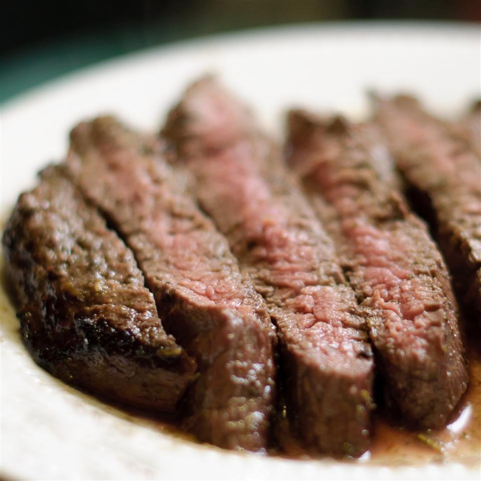

Tuscan Flank Steak

I've only been to Tuscany once, but I do remember a grilled steak coming off a charcoal fire, which was then sliced and splashed with olive oil, lemon, and rosemary. While I'm sure my version is far from traditional, it's really tasty and the very user-friendly flank steak is the perfect cut.
Ingredients
- ½ cup chopped flesh rosemary
- 6 cloves garlic
- ⅓ cup olive oil
- ¼ cup lemon juice
- 1 teaspoon coarsely ground black pepper
- ½ teaspoon red pepper flakes
- ½ teaspoon salt
- 1 (1 1/2-pound) flank steak, trimmed of excess fat
- ⅓ cup extra virgin olive oil
- 3 tablespoons lemon juice
- 2 teaspoons lemon zest
- 1 teaspoon minced fresh rosemary
- ⅛ teaspoon red pepper flakes
- 1 pinch salt
- 1 sprig fresh rosemary